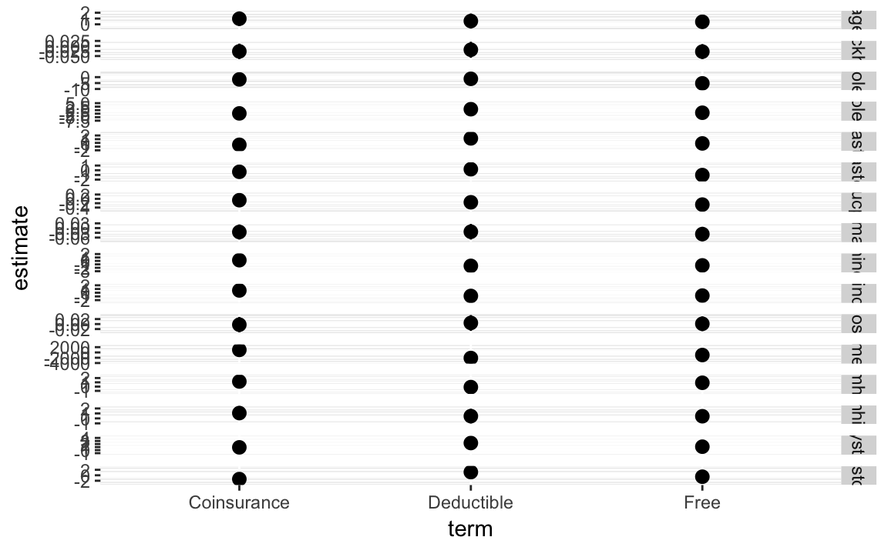
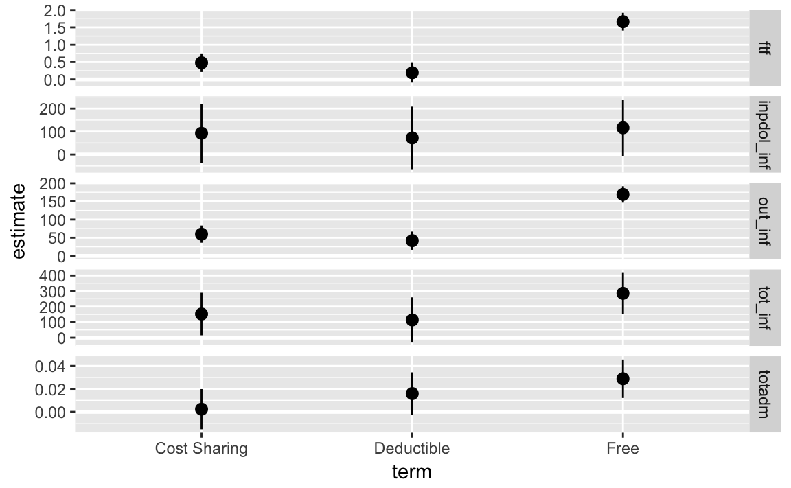

3 RAND Health Insurance Experiment (HIE)
This provides code replicates the Tables 1.3 and 1.4 of Angrist and Pischke (2014) which replicate the analyses from the RAND Health Insurance Experiment (Brook et al. 1983,@Aron-DineEinavEtAl2013).
Load necessary libraries.
3.1 Table 1.3
Table 1.3 presents demographic and baseline health characteristics for subjects of the RAND Health Insurance Experiment (HIE).
Load the rand data.
Calculate the number in each plan:
| plantype | n |
|---|---|
| Catastrophic | 759 |
| Deductible | 881 |
| Coinsurance | 1022 |
| Free | 1295 |
For variables, difference in means between plantypes
varlist <- c("female", "blackhisp", "age", "educper",
"income1cpi", "hosp", "ghindx", "cholest", "diastol",
"systol", "mhi", "ghindxx",
"cholestx", "diastolx", "systolx", "mhix")
Create column (1) with the mean and standard deviation of the “Catastrophic” plan,
catastrophic_stats <- rand_sample %>%
filter(plantype == "Catastrophic") %>%
select(one_of(varlist)) %>%
gather(variable, value) %>%
group_by(variable) %>%
summarise(Mean = mean(value, na.rm = TRUE),
`Std. Dev.` = sd(value, na.rm = TRUE))| variable | Mean | Std. Dev. |
|---|---|---|
| age | 3.24e+01 | 1.29e+01 |
| blackhisp | 1.72e-01 | 3.77e-01 |
| cholest | 2.07e+02 | 3.99e+01 |
| cholestx | 2.03e+02 | 4.21e+01 |
| diastol | 7.48e+01 | 1.10e+01 |
| diastolx | 7.88e+01 | 1.20e+01 |
| educper | 1.21e+01 | 2.88e+00 |
| female | 5.60e-01 | 4.97e-01 |
| ghindx | 7.09e+01 | 1.49e+01 |
| ghindxx | 6.85e+01 | 1.59e+01 |
| hosp | 1.15e-01 | 3.20e-01 |
| income1cpi | 3.16e+04 | 1.81e+04 |
| mhi | 7.38e+01 | 1.43e+01 |
| mhix | 7.55e+01 | 1.48e+01 |
| systol | 1.22e+02 | 1.65e+01 |
| systolx | 1.22e+02 | 1.87e+01 |
The difference in means between plans and the catastophic plan.
calc_diffs <- function(x) {
# programmatically create the formula
f <- quo(!!sym(x) ~ plantype)
# this would also work
# f <- as.formula(str_c(x, " ~ plantype_1 + plantype_2 + plantype_3"))
mod <- lm(f, data = rand_sample)
out <- tidy(mod)
out[["response"]] <- x
out
}plantype_diffs <- map_dfr(varlist, calc_diffs) %>%
select(response, term, estimate, std.error) %>%
mutate(term = str_replace(term, "^plantype", ""))Note: the above code currently does not cluster by family ID as in the original analysis so the standard errors will be different.
Print the table. This could be done much nicer, … but for now.
fmt_num <- function(x) {
prettyNum(x, digits = 3, format = "f", big.mark = ",", drop0trailing = FALSE)
}
plantype_diffs %>%
mutate(estimate = str_c(fmt_num(estimate), " (", fmt_num(std.error), ")")) %>%
select(-std.error) %>%
spread(term, estimate) %>%
knitr::kable(digits = 3)| response | (Intercept) | Coinsurance | Deductible | Free |
|---|---|---|---|---|
| age | 32.4 (0.479) | 0.966 (0.632) | 0.561 (0.654) | 0.435 (0.603) |
| blackhisp | 0.172 (0.0146) | -0.0269 (0.0192) | -0.0188 (0.0199) | -0.0281 (0.0186) |
| cholest | 207 (2.07) | -1.93 (2.76) | -1.42 (2.82) | -5.25 (2.59) |
| cholestx | 203 (1.77) | -2.31 (2.3) | 0.691 (2.4) | -1.83 (2.19) |
| diastol | 74.8 (0.55) | -0.514 (0.73) | 1.22 (0.747) | -0.143 (0.685) |
| diastolx | 78.8 (0.473) | -0.335 (0.615) | 0.219 (0.641) | -1.03 (0.585) |
| educper | 12.1 (0.116) | -0.0613 (0.153) | -0.157 (0.157) | -0.263 (0.146) |
| female | 0.56 (0.0181) | -0.0247 (0.0239) | -0.0231 (0.0247) | -0.0379 (0.0228) |
| ghindx | 70.9 (0.651) | 0.211 (0.863) | -1.44 (0.844) | -1.31 (0.801) |
| ghindxx | 68.5 (0.604) | 0.612 (0.785) | -0.869 (0.82) | -0.776 (0.745) |
| hosp | 0.115 (0.0117) | -0.00249 (0.0154) | 0.00449 (0.0159) | 0.00117 (0.0147) |
| income1cpi | 31,603 (651) | 970 (857) | -2,104 (891) | -976 (819) |
| mhi | 73.8 (0.515) | 1.19 (0.677) | -0.12 (0.7) | 0.89 (0.648) |
| mhix | 75.5 (0.542) | 1.07 (0.705) | 0.454 (0.735) | 0.433 (0.669) |
| systol | 122 (0.797) | 0.907 (1.06) | 2.32 (1.08) | 1.12 (0.993) |
| systolx | 122 (0.715) | -1.39 (0.929) | 1.17 (0.969) | -0.522 (0.885) |
Plot the difference-in-means of each plantype vs. catastrophic insurance.
ggplot(filter(plantype_diffs, term != "(Intercept)"),
aes(x = term, y = estimate,
ymin = estimate - 2 * std.error,
ymax = estimate + 2 * std.error)) +
geom_hline(yintercept = 0, colour = "white", size = 1) +
geom_pointrange() +
facet_grid(response ~ . , scales = "free_y")

3.2 Table 1.4
Table 1.4 presents health outcome and health expenditure results from the RAND HIE.
correlate year variable from annual expenditures data to correct calendar year in order to adjust for inflation.
Adjust spending for inflation. The CPI adjustment values below are based on the June CPI from 1991 (see table found at http://www.seattle.gov/financedepartment/cpi/historical.htm ).
cpi <- tribble(
~ year, ~ cpi,
1973, 3.07,
1974, 2.76,
1975, 2.53,
1976, 2.39,
1977, 2.24,
1978, 2.09,
1979, 1.88,
1980, 1.65,
1981, 1.5,
1982, 1.41,
1983, 1.37,
1984, 1.31,
1985, 1.27
)rand_person_spend <-
left_join(rand_person_spend,
cpi, by = c("expyear" = "year")) %>%
mutate(out_inf = outsum * cpi,
inpdol_inf = inpdol * cpi)Add a total spending variable.
Add a variable for any health insurance (free, Individual deductible, or cost-sharing):
Count the number of observations in each plan-type,
count(rand_person_spend, plantype)
#> # A tibble: 4 x 2
#> plantype n
#> <fct> <int>
#> 1 Catastrophic 3724
#> 2 Deductible 4175
#> 3 Cost Sharing 5464
#> 4 Free 6840and any-insurance,
count(rand_person_spend, any_ins)
#> # A tibble: 2 x 2
#> any_ins n
#> <lgl> <int>
#> 1 FALSE 3724
#> 2 TRUE 16479Create a list of response variables.
Mean and standard deviation for those receiving catastrophic insurance,
rand_person_spend %>%
filter(plantype == "Catastrophic") %>%
select(one_of(varlist)) %>%
gather(response, value) %>%
group_by(response) %>%
summarise(Mean = mean(value, na.rm = TRUE),
`Std. Dev.` = sd(value, na.rm = TRUE))
#> # A tibble: 5 x 3
#> response Mean `Std. Dev.`
#> <chr> <dbl> <dbl>
#> 1 ftf 2.78 5.50
#> 2 inpdol_inf 388. 2308.
#> 3 out_inf 248. 488.
#> 4 tot_inf 636. 2535.
#> 5 totadm 0.0991 0.379Calculate the difference in means between plans and the catastophic plan.
calc_diffs <- function(x) {
# programmatically create the formula
f <- quo(!!sym(x) ~ plantype)
mod <- lm(f, data = rand_person_spend)
out <- coef_test(mod, "CR2", cluster = rand_person_spend$fam_identifier) %>%
as_tibble() %>%
rownames_to_column(var = "term") %>%
select(term, estimate = beta, std.error = SE)
out[["response"]] <- x
out
}person_diffs <- map_dfr(varlist, calc_diffs) %>%
select(response, term, estimate, std.error) %>%
mutate(term = str_replace(term, "^plantype", ""))Standard errors are clustered by family identifier using the clubSandwich package.
Print the table. If this were an actual publication, I’d make it nicer.
fmt_num <- function(x) {
prettyNum(x, digits = 3, format = "f", big.mark = ",", drop0trailing = FALSE)
}
person_diffs %>%
mutate(estimate = str_c(fmt_num(estimate), " (", fmt_num(std.error), ")")) %>%
select(-std.error) %>%
spread(term, estimate) %>%
knitr::kable(digits = 3)| response | (Intercept) | Cost Sharing | Deductible | Free |
|---|---|---|---|---|
| ftf | 2.78 (0.178) | 0.481 (0.24) | 0.193 (0.247) | 1.66 (0.248) |
| inpdol_inf | 388 (44.9) | 92.5 (72.8) | 72.2 (68.6) | 116 (59.8) |
| out_inf | 248 (14.8) | 59.8 (20.7) | 41.8 (20.8) | 169 (19.9) |
| tot_inf | 636 (54.5) | 152 (84.6) | 114 (79.1) | 285 (72.4) |
| totadm | 0.0991 (0.00785) | 0.0023 (0.0108) | 0.0159 (0.0109) | 0.0288 (0.0105) |
Additionally we could plot the difference-in-means of each plantype vs. catastrophic insurance.
ggplot(filter(person_diffs, term != "(Intercept)"),
aes(x = term, y = estimate,
ymin = estimate - 2 * std.error,
ymax = estimate + 2 * std.error)) +
geom_hline(yintercept = 0, colour = "white", size = 1) +
geom_pointrange() +
facet_grid(response ~ . , scales = "free_y")
